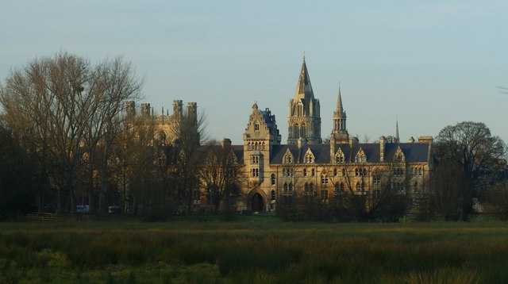

Chevening Scholarship for Pakistani Students: Eligibility, 2,800-Hour Rule, Deadlines
Last updated: October 2026. Dates below name their cycle. Verify every date on chevening.org before you apply.

Chevening is the UK government's global scholarship programme, funded by the Foreign, Commonwealth and Development Office. It pays for a one-year taught master's degree at a UK university — tuition, a monthly living allowance, return flights and the visa fee. Pakistan is an eligible country, and Pakistani graduates compete in the same global process as applicants from more than 160 countries and territories.
Chevening is not a scholarship for fresh graduates. Its defining rule is work experience, and its essays reward people who can show leadership and a clear plan for what they will do back home. If that sounds like you, it is one of the strongest fully funded options available.
Who can apply from Pakistan
- Be a citizen of Pakistan (Chevening is for citizens of eligible countries; dual nationals should check the official guidance for their situation).
- Hold an undergraduate degree that qualifies you for entry to a UK master's programme, completed at least two years before the application deadline.
- Have at least 2,800 hours of work experience gained after that degree (see below).
- Apply to three different eligible UK master's courses, and secure at least one unconditional offer from one of them by the offer deadline.
- Agree to return to Pakistan for at least two years after the scholarship ends.
There is no age limit and no single required field of study. Chevening looks for leadership potential across professions — teachers, journalists, engineers, civil society workers, business people and public servants have all won it.
The 2,800-hour work rule, explained properly
2,800 hours is roughly two years of full-time work, but Chevening counts hours, not calendar years. That distinction matters. Part-time work counts at its actual hours. Voluntary work counts. Paid internships count, as long as they came after your undergraduate degree. Work done during your degree does not count.
You enter each job in the online system with dates and average weekly hours, and the system totals them. You may combine several jobs to reach 2,800. The common mistake is guessing: if your total is short, your application is ineligible no matter how good your essays are. Add your hours up honestly before you start writing.
A useful check: one year of full-time work at 35–40 hours a week is roughly 1,400–1,800 hours. Two such years clears the bar. Three years of half-time work may not.
Deadlines: the 2027 cycle and the next one
- 2027 cycle: applications opened 4 August 2026 and closed 6 October 2026 at 11:00 UTC. The portal closes exactly on time, with no grace period.
- Unconditional offer deadline: 8 July 2027 for the 2027 cycle.
- Next cycle: Chevening opens annually, usually in August. Expect the next round around August 2027 and confirm the dates on chevening.org when they are published.
If you missed the October 2026 deadline, the productive move is to spend the months before August 2027 on the two things that decide Chevening: reaching 2,800 verifiable hours and choosing three courses that genuinely fit your career plan.
The four essays
Chevening asks four essay questions: leadership and influence, networking, studying in the UK, and your career plan. Each has its own word limit, shown in the application portal. The pattern of strong answers is the same across all four: one concrete story, your specific role in it, what changed because of you, and how it connects to what you will do after the master's. Generic praise of the UK, or a list of your CV, scores badly. See our SOP writing guide for the structure that works across scholarship essays.
Do you need IELTS for Chevening?
Chevening itself removed its own English language requirement in 2020, so there is no Chevening test deadline. Your three chosen universities are a different matter: each sets its own English requirement, and you need an unconditional offer from at least one of them. Check each university's requirement early, because a test date booked late can cost you the offer deadline. Full detail is in our IELTS guide.
How to apply, step by step
- Confirm you meet every eligibility rule, especially the 2,800 hours.
- Use the Chevening course finder to choose three eligible master's courses that fit your plan.
- Create an account on the Chevening online application system, enter your work history with accurate hours, and write the four essays.
- Name referees who know your work and can respond on time.
- Submit before the deadline, then apply to your three universities in parallel and track their English and offer requirements.
- If shortlisted, prepare for interview: expect questions that test the claims in your essays with real examples.
For Indian students
The same global Chevening rules and the same annual window apply to Indian applicants — there is no separate Indian deadline or quota published by the programme. India is consistently one of the largest Chevening countries, which means competition is strong but the process is identical: 2,800 hours after your degree, three course choices, four essays, and the two-year return commitment. Apply through the India country page on chevening.org and confirm the current cycle's dates there, since the window moves slightly each year.